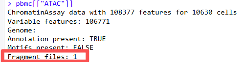
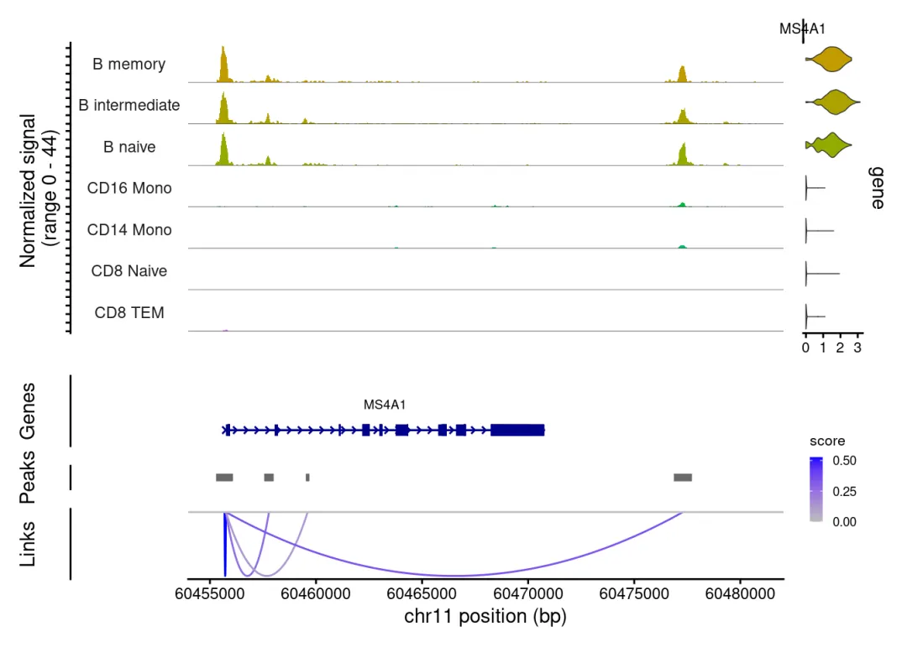

scATAC染色质可及性分析的这个报错你遇到过吗？ TabixFile: Fragment file is not indexed
原文：https://mp.weixin.qq.com/s?__biz=MzAwMzIzOTk5OQ==&mid=2247541245&idx=3&sn=f4e97a9dea01b0aace963899d003f154&chksm=9b3c58adac4bd1bb4d34e83d0a9124f57da4a6ff8dd72c32c40da41e70fcb5d223e4f25a1e01#rd 合集：答读者问
一、遇到问题解决问题
scATAC教学持续进行中：

1、先上报错
在单细胞ATAC-seq下游分析中，利用Signac包进行CoveragePlot() 信号覆盖度绘图，或者是Footprint() 进行转录因子足迹分析都是非常常用的步骤。很多小伙伴反馈遇到了Fragment文件未索引 报错，报错提示类似于**“ Error: TabixFile: Fragment file is not indexed”**。下面我们直接上报错案例：
-
-
- *
-
# 先加载我们需要的R包library(Signac)library(Seurat)library(BSgenome.Mmusculus.UCSC.mm10)
-
- *
# 读取之前的scATAC分析结果pbmc <-readRDS('/data/01_scATAC/result/pbmc_multiomics.rds')DefaultAssay(pbmc)
## [1] "ATAC"
-
-
-
-
-
-
-
-
-
-
-
-
-
- *
-
-
-
-
-
-
-
-
-
-
-
-
# 指定需要绘图的细胞亚群idents.plot <- c("B naive", "B intermediate", "B memory", "CD14 Mono", "CD16 Mono", "CD8 TEM", "CD8 Naive")# 运行CoveragePlot绘制在特定基因组区域内，不同细胞群体的测序片段的平均覆盖频率try({p1 <- CoveragePlot( object = pbmc, region = "MS4A1", features = "MS4A1", expression.assay = "SCT", idents = idents.plot, extend.upstream = 500, extend.downstream = 10000 )})
## Error : TabixFile: Fragment file is not indexed.
可以看到，直接就报错提示**“ Error: TabixFile: Fragment file is not indexed”**啦！
2、现象排查
进行到这里我的第一个反应是检查 fragment 信息：
- *
# 查看对象内Fragment信息Fragments(pbmc)
## [[1]]
## A Fragment object for 10630 cells
提示存在 Fragment 对象，给了我们一种存在了Fragment file的错觉。但是如果存在文件，按理说就不应该报错Error: TabixFile: Fragment file is not indexed。所以真正的问题我们还没找到。其实Fragments(pbmc)这一步的缺点是不会输出文件真实路径。
真正导致这个报错核心诱因可能以下几个方面：
（1）rds 文件拷贝、服务器迁移、路径变更后，对象内记录的路径失效（2）即使文件路径存在，若fragments.tsv.gz缺少 tabix 索引文件（.tbi），Tabix 无法读取；
此外，直接覆盖 Fragment 对象会触发二次报错：
*
Error inAddFragments(object = object, fragments = value) : Cells already present in a fragment object
Signac规则：同一个 Assay 不能直接追加 / 替换 Fragment，必须先清空原有 Fragment。
一句话总结：
对象内绑定的 Fragment 文件路径失效，或者碎片文件缺少 tabix 索引；且不能直接覆盖 Fragment，需要先置空。
3、回归本源
3.1 scATAC基本概念
在制作每个教程时，我们都建议大家了解分析背后的背景知识，学习这部分数据分析之前，推荐大家先看一下这篇综述： Sinha S, Satpathy AT, Zhou W, Ji H, Stratton JA, Jaffer A, Bahlis N, Morrissy S, Biernaskie JA. Profiling Chromatin Accessibility at Single-cell Resolution. Genomics Proteomics Bioinformatics. 2021 Apr;19(2):172-190.
这篇文献我们曾经做过文献解读，大家可以看下我们scATAC学习手册往期推送。
scATAC-seq 全称：single-cell Assay for Transposase-Accessible Chromatin using sequencing
核心原理：Tn5 转座酶优先切割染色质开放区域（无核小体包裹区域），加上测序接头，建库测序；
测序得到的片段代表：单个细胞中基因组上开放的染色质位置；
Fragment 文件：scATAC 最核心原始文件，记录每一条有效片段：染色体、起始位置、终止位置、细胞 barcode；
CoveragePlot 作用：根据 Fragment 信息，统计目标基因区域每个细胞亚群的片段富集程度。
3.2 Signac对象中scATAC核心数据结构分解
（1）peaks Assay 结构

Fragment 对象（重点！）
（2）Fragment 对象结构
Fragment object ├─ @path：原始Fragment.tsv.gz 文件路径（最容易失效） ├─ @cells：细胞barcode映射 └─ 依赖：同目录必须存在 Fragment.tsv.gz.tbi 索引文件
- *
# 仅查看是否存在Fragment对象，不输出路径Fragments(pbmc)
## [[1]]
## A Fragment object for 10630 cells
- *
# 提取内部存储的文件真实路径Fragments(pbmc)[[1]]@path
## [1] "/home/biomamba_lucky/multi_omics/01_scATAC/data/pbmc_granulocyte_sorted_10k/pbmc_granulocyte_sorted_10k_atac_fragments.tsv.gz"
很多人误以为Fragments()能校验文件有效性，实际上它仅读取对象插槽，不会校验硬盘上文件是否存在、有无索引。
3.3 路径失效典型场景
（1）本地分析后，把rds拷贝到另一台服务器运行；
（2）文件夹移动、重命名；
（3）压缩包解压后路径层级变化；
以上动作都可能导致分析对象内保存的是旧路径，硬盘上文件位置不一致 → 读取失败
4、完整报错修复流程
4.1 检查当前 Fragment 状态
- *
# 查看是否挂载Fragment对象Fragments(pbmc)
## [[1]]
## A Fragment object for 10630 cells
-
- *
# 提取对象内部记录的文件路径old_path <- Fragments(pbmc)[[1]]@pathprint(old_path)
## [1] "/home/biomamba_lucky/multi_omics/01_scATAC/data/pbmc_granulocyte_sorted_10k/pbmc_granulocyte_sorted_10k_atac_fragments.tsv.gz"
观察输出路径是否为服务器当前有效路径。
4.2 构建新的 Fragment 对象
修改path为你服务器上真实 Fragment 文件路径
-
-
- *
-
frag_obj <- CreateFragmentObject( path = "/data/01_scATAC/data/pbmc_granulocyte_sorted_10k/pbmc_granulocyte_sorted_10k_atac_fragments.tsv.gz", cells = colnames(pbmc))
前置检查：确认该路径下同时存在两个文件
*
file.exists("/data/01_scATAC/data/pbmc_granulocyte_sorted_10k/pbmc_granulocyte_sorted_10k_atac_fragments.tsv.gz")
## [1] TRUE
*
file.exists("/data/01_scATAC/data/pbmc_granulocyte_sorted_10k/pbmc_granulocyte_sorted_10k_atac_fragments.tsv.gz.tbi")
## [1] TRUE
4.3 清空原有 Fragment，再赋值（规避细胞冲突报错）
注意！！不可直接覆盖，必须先置 NULL！
-
-
-
-
- *
-
-
-
# 清空peaks assay原有fragmentFragments(pbmc[["ATAC"]]) <- NULL# 挂载新Fragment对象Fragments(pbmc[["ATAC"]]) <- frag_obj# 校验更新结果Fragments(pbmc[["ATAC"]])
## [[1]]
## A Fragment object for 10630 cells
*
Fragments(pbmc[["ATAC"]])[[1]]@path
## [1] "/data/01_scATAC/data/pbmc_granulocyte_sorted_10k/pbmc_granulocyte_sorted_10k_atac_fragments.tsv.gz"
4.4 重新运行CoveragePlot足迹分析
-
-
-
-
-
-
-
-
-
-
- *
-
-
-
-
-
-
-
-
-
try({p1 <- CoveragePlot(object = pbmc, region = "MS4A1", features = "MS4A1", expression.assay = "SCT", idents = idents.plot, extend.upstream = 500, extend.downstream = 10000 )})p1

现在就不报错啦，前期出错的原因其实是因为我们的文件路径发生了变化，只要及时修改成新的路径就可以啦~ 后续大家遇到类似问题可以参考我们前面思路一步一步进行排查哈~
5、额外避坑总结
（1）保存rds前，尽量保证fragment文件路径长期不变；跨系统分析建议重新构建fragment对象；
（2）基因组 BSgenome 严格匹配：小鼠 mm10 / 人 hg38，选错会导致坐标不匹配；
（3）Fragment 文件必须使用 bgzip 压缩，普通 gzip 无法构建 tabix 索引；
（4）后续分享 rds 给他人时，提醒对方重新校验 Fragment 路径，这是 scATAC 最常见的移植坑。
scATAC最新教程可见：
二、打铁还需自身硬
关于单细胞测序分析的全部干货教程，我们出了很多哦~，每一份内容都凝结着实战经验，希望能帮大家解锁生信技能，学有所获！
单细胞数据分析系列教程：
B站视频，先看一遍视频再去看推送操作，建议至少看三遍
https://www.bilibili.com/video/BV1zWXhBQE1i/
如果你希望有人真的手把手教你学单细胞：
R语言scRNA-seq专题班：R语言scRNA-seq分析系列专题
R语言scRNA-seq全程班：100个小时沉浸式学会scRNA-seq数据分析
Python scRNA-seq全程班：82h视频教程《Python版scRNA-seq分析全流程》
学单细胞的顺序：
单细胞基础分析教程
手把手教你做单细胞测序数据分析|3.单样本分析(2023年重置)手把手教你做单细胞测序数据分析|4.多样本整合(2023年重置)手把手教你做单细胞测序数据分析|5.细胞类型注释，从入门到入土手把手教你做单细胞测序数据分析|6组间差异分析手把手教你做单细胞测序数据分析|7基因集富集分析scRNA-seq数据基础分析手册(2025最新修订)（Seurat V5）********scRNA-Seq学习手册Python版
单细胞图片改造计划
改造单细胞降维图| 2.ggplot2中的DIY改造单细胞降维图| 3.3D降维图与动图绘制改造单细胞降维图| 4.一些造好的轮子沉浸式统计细胞比例改造单细胞FeaturePlotVlnPlot用法及ggplot复现VlnPlot的ggplot改造单细胞Figure 1常见图表单细胞常见Figure 1 视频教程改造单细胞DotPlot改造单细胞DoHeatmap
向下滑动查看更多
上游fastq文件处理
单细胞分析的最上游——处理Fastq文件：cellranger
单细胞分析的最上游——处理Fastq文件：dropseqRunnerCellranger报错：Unable to distinguish between [SC5P-R2, SC3Pv2] ...BD Rhapsody平台单细胞转录组定量流程BD Rhapsody定量输出文件读取10X Visium上游定量过程原理+代码流程，一文学会华大C4平台scRNA-seq定量分析
向下滑动查看更多
单细胞进阶分析-轨迹分析B站连续播放起来比较方便：https://www.bilibili.com/video/BV1br4y1x7Hf《拟时序分析》1.概论《拟时序分析》2.monocle概论《拟时序分析》3.monocle2实操：精简版拟时序《拟时序分析》4.monocle2实操：完整版《拟时序分析》5.初识monocle3《拟时序分析》6.monocle3的降维、分群、聚类《拟时序分析》7.monocle3的拟时序分析解决monocle2的orderCells报错的两种方法一文搞定拟时序分析的下游可视化探索Slingshot拟时序分析学习手册 一文学会scRNA Velocity剪切速率分析一文学会四种scRNA-seq轨迹分析monocle2可以说是报错之王，ordercell()与igraph的版本问题
向下滑动查看更多
单细胞进阶分析-细胞通讯分析
B站连续播放起来比较方便：https://www.bilibili.com/video/BV1br4y1x7Hf
《细胞通讯》CellChat学习手册《细胞通讯》1.概论《细胞通讯》2.CellChat基础分析教程《细胞通讯》2.2CellChat多组别分析一文学会四种scRNA-seq细胞通讯分析scRNA-Seq细胞通讯之《iTalk学习手册》SeekSpace细胞通讯分析CellChat更新，projectData不能用啦CellphoneDB搞定细胞通讯分析
向下滑动查看更多
单细胞进阶分析-SCENIC转录因子&基因共表达网络分析
SCENIC单细胞转录因子预测|3.软件安装与数据准备SCENIC单细胞转录因子预测|4.精简版流程SCENIC单细胞转录因子预测|5.step1+step2构建共表达网络与regulonSCENIC单细胞转录因子预测|6.Step3 利用AUCell对Regulon评分SCENIC单细胞转录因子预测|7.Step4 二元矩阵的计算与可视化SCENIC单细胞转录因子预测|8.Step5 regulon聚类、分群、降维SCENIC单细胞转录因子预测|9.下游探索 SCENIC转录因子调控网络图比R版本快几十倍| Pyscenic单细胞转录因子预测非模式物种PySCENIC分析流程 R+Python组合拳可能是分析SCENIC最好的方式
一文学会四种基因共表达网络分析
scRNA-seq基因共表达网络分析合辑
SCENIC报错 object 'motifAnnotations_hgnc' not found 解决方案
hdWGCNA绘制图形报错，可能当前设置的内存已经不能满足绘图
向下滑动查看更多
单细胞进阶分析-拷贝数变异分析单细胞拷贝数变异学习手册 肿瘤异质性分析必备| 一文学会四种scRNA-seq拷贝数变异分析scRNA肿瘤细胞鉴定神器：copykatcopykat和infercnv鉴定肿瘤细胞还挺准CopyKat的加速计算解决SCEVAN拷贝数变异分析的ragg依赖问题踩坑实录，Numbat进行拷贝数变异分析碰到的三大Error scATAC分析
一文了解单细胞染色质及常见分析一文了解染色质可及性和表观基因组调控snATAC联合scRNA揭示小鼠肾脏细胞分化程序和疾病靶点4.6w字长文| SeekOne®-DD单细胞ATAC+RNA一胞双组学-学习手册一站式完成scATAC与scRNA-seq定量-seekarctoolsSeurat团队打造——Signac分析实操肝癌实战多样本分析| 基于SeekOne® DD单细胞ATAC+RNA双组学
向下滑动查看更多
scFAST系列一文学会scFAST-seq数据分析scFAST分析| 01.绪论scFAST分析| 02.单细胞分析准备工作scFAST分析| 03.fast模块scFAST分析| 04.Seurat分析及可视化scFAST分析| 05.mut模块scFAST-seq创新技术方案助力清华大学沈晓骅课题组Cell发表
向下滑动查看更多
单细胞其它技术贴不知不觉，已分享了近两百篇单细胞知识帖细胞的数量由誰决定？单细胞中应该如何做GSVA？什么？不做单细胞也能分析细胞类群和免疫浸润？各类单细胞对象（数据格式）转换大全（一）单细胞对象(数据格式)转换大全|2. h5ad转Seuratobj批量整理好GEO中下载的单细胞数据SCTransform与ScaleData没有barcode文件的单细胞数据要怎么读取单细胞基因集评分之AUCell一文搞定单细胞基因集评分如何加快Seurat的计算速度人类单细胞测序数据中有哪些以"**-"开头的基因为什么总把分辨率调的很高Seurat中如何让细胞听你指挥单细胞数据在R中的读取及存储速度太慢怎么办？这个神包来帮你！单细胞分群分辨率选择困难症一文搞定空间转录组与单细胞测序的整合分析一文掌握十个单细胞数据库
10xGenomics官方可视化工具——Loupe Browser
genesorteR——比FindAllMarkers快一百倍！
《Cancer Cell》|时空单细胞揭示CRC的PD-1治疗免疫细胞动态
T Cell注释神器,《Nature Methods》发布T-CellAnnoTator，搞定你的TCell！
不做单细胞，怎么让自己的Bulk数据也能分析细胞类群和免疫浸润？
还在做简单的差异分析？MOFA单细胞多组学因子分析筛选特征基因
CellOracle联合scRNA与scATAC构建基因调控网络
实测风靡一时的scTenifoldKnk单细胞虚拟基因敲除,准不准?
biomart同源基因转换的"HTTP 404 Not found"解决方案
4.6w字长文| SeekOne®-DD单细胞ATAC+RNA一胞双组学-学习手册
蜘蛛侠手搓RNAi设备，分析个蜘蛛单细胞数据看看miRNA调控效果+scTenifoldKnk虚拟敲除一致性评价
Seurat单细胞标准化：LogNormalize vs SCTransform，到底该怎么选？
向下滑动查看更多
单细胞压力测试
向下滑动查看更多
单细胞代码复现单细胞注释复写(一):Human Fetal Kidney单细胞注释复写（二）: human colorectal单细胞复写|3.急性心肌梗塞(AMI)外周血scRNA-Seq分析实战(链接重置)单细胞复写|4. GSE157783数据集复现及差异分析
学员代码复现|scRNA-seq解析非酒精性脂肪性肝发生机制
《NC》代码复现| scRNA-seq揭示人纤维化皮肤病中的成纤维细胞异质性和间充质成纤维细胞增加
《Nature Communications》| scRNA-seq揭示头颈癌早期转移过程中潜在的免疫逃避机制
代码复写《Developmental Cell》|利用scRNA-seq对新生儿~成人肝脏发育和成熟的时间分析
《Cell》复现|中性粒细胞scRNA-seq图谱阐明抗肿瘤抗原呈递效力
《Cancer Cell》|时空单细胞揭示CRC的PD-1治疗免疫细胞动态
代码复现|吞噬作用增强肿瘤中巨噬细胞的氧化代谢和免疫抑制特征
代码复现| scRNA-seq揭示人纤维化皮肤病中的成纤维细胞异质性与增殖
《NC》代码复现|snATAC联合scRNA-seq揭示小鼠肾脏细胞分化程序与疾病靶点
《Nature Genetics》文献复写 | 结直肠癌免疫细胞的高清空转分析（Visium HD+Xenium）
单细胞代码复写| 干细胞样CD4+ T细胞与自身免疫性血管炎代码复写| 结直肠癌免疫图谱中的基因表达程序代码复写| MLP模型鉴定免疫细胞发育和瘤内T细胞耗竭的单细胞染色质图谱代码复写| T Cell单细胞参考图谱代码复写| 小鼠纹状体单细胞基因变化图谱代码复写| 人类肾脏snRNA-seq图谱拟时序分析代码复写| CellRank的教程重现代码复写| 胶质瘤相关巨噬细胞scRNA图谱代码复写| 肝癌单细胞分群marker代码复写| scRNA揭示T1D骨髓与骨质减少的关系代码复写| 微环境中肿瘤免疫屏障决定了免疫治疗的效果代码复写| 肝脏发育、成熟的单细胞图谱代码复写| 胰腺导管腺癌的内异质性和恶性进展scRNA-seq图谱代码复写| 人类肾脏scRNA-seq图谱代码复写| 小鼠与人类的空间表观单细胞图谱
代码复写| colon, tumor, anti-PD-1, scRNA-seq
代码复写| 非小细胞肺癌免疫治疗后肿瘤微环境重塑scRNA图谱
代码复写| 肢端黑色素瘤细胞scRNA-seq图谱&免疫治疗
零代码复现《Genome Medicine》|scRNA-seq解析CXCL16/CXCR6驱动驻留T细胞促进突触消除
NC | 单细胞分析揭示头颈部癌早期转移过程中潜在的免疫逃逸机制(R语言版本)
向下滑动查看更多
单细胞文献阅读写SCI论文前首先要问自己11个问题2022年了，都有哪些器官/组织有scRNA-Seq数据|小鼠篇2022年了，都有哪些器官/组织有scRNA-Seq数据|人类篇测序技术的发展与应用2023年了, 都哪些物种有scRNA-Seq数据单细胞测序解析糖尿病肾病中肾小球的动态变化Science| 小鼠全肾单细胞测序开篇之作Cell metabolism| 单细胞测序技术解析健康人与T2D患者的胰岛差异一篇不花钱就能白嫖的文章不会吧不会吧，Nature都能白嫖？高氧下小鼠肺发育损伤的ScRNA图谱老树开新花—EGFR、肿瘤、免疫+scRNA-Seq癌前基质细胞驱动BRCA1肿瘤发生单细胞全序列转录组测序上新原发头颈癌和肿瘤转移微生态IgA肾病 & STRT-Seq紧跟生信"钱"沿,胰腺癌 &免疫多模态图谱《Cell Metabolism》：肾脏疾病 &代谢&核受体ESRRA《Nature communication》：PD-1 &急性髓细胞性白血病&T Cell单细胞测序揭示鼻咽癌微环境的基质动力学和肿瘤特异性特征《Nature》：MYB调控衰竭性T细胞对检查点抑制的响应自测scRNA-Seq+scWGBS=3分三区文章？百万级单细胞多组学数据集成单细胞测序做到什么程度能毕业|硕士篇单细胞测序做到啥程度能毕业|博士篇单细胞转录组+亚细胞空间代谢组=25分文章终于读到一篇用monocle3做拟时序的文章空间转录组与单细胞转录组整合分析工具大比拼酸了，六个样本的scRNA-Seq+差异分析=9分文章FPKM,TPM, Counts: 谁更适合做差异分析？单细胞都能活检测序了？急性心肌梗塞(AMI)外周血scRNA-Seq分析流程及结果梳理< IF=27.4> IgG4相关性疾病中颌下腺和血液中的细胞和分子改变scRNA-Seq+WGCNA+铁死亡：IF=9.69《Nature》: 单细胞解析大脑感知流感过程两万字长文|当前单细胞 RNA-seq 分析的最佳实践数百万级单细胞数据时代的多组学分析《Nature Methods》: NiCheNet, 能够考虑到胞内转录调控的细胞通讯软件基于scRNA-Seq &空间转录组的AKI研究生信分析不能光抄教程自测蛋白质组+Bulk RNA-Seq & 挖掘scRNA-Seq=13.6分JASN非监督式聚类在scRNA-Seq应用中的挑战宋尔卫院士的儿子以共一身份发表《Cell》！Seurat V5的《Nature Biotechnology》CAR-T治疗急性髓细胞性白血病的scRNA-Seq图谱有免疫特征的基质细胞，有没有可能是双细胞？人类肾脏参考组织图谱临床样本+单细胞+空转=IF4.8？鼻咽癌的Bulk RNA-Seq与scRNA-Seq联合分析GPTCelltype：玩GPT4玩出Nature13分+文章利用scRNA-Seq揭示地铁细颗粒物引起肺部炎症的分子机制除了铁死亡，还有铜死亡？！拟时序分析神包—monocle的三篇《Nature》Q1临床设计+生信分析，单细胞揭示骨髓增生异常综合征中的造血功能异常 &微环境中的细胞状态单细胞空间转录组在脑科学领域的应用IF14.3| scRNA-seq+脂质组多组学分析揭示宫内生长受限导致肝损伤的性别差异《Nature Methods》教你如何挑选空转平台Tangram利用深度学习完成空间与单细胞数据的整合《Narure Biotechnology》教你怎么"捏造"单细胞数据《Advanced Science》新型Arf1抑制剂促进癌症干细胞衰老并增强抗肿瘤免疫scRNA-seq揭示脓毒症预后水平预测的关键靶点！snATAC联合scRNA揭示小鼠肾脏细胞分化程序和疾病靶点一文了解单细胞染色质及常见分析2025年国自然还能写肿瘤免疫微环境吗？《NAR》 | 泛癌单细胞多组学在线分析工具—scCancerExplorerscRNA-seq揭示人纤维化皮肤病中的成纤维细胞异质性和间充质成纤维细胞增加一文了解sc与sn的异同scRNA-seq联合olink揭示肥胖骨关节炎患者新治疗靶点！单细胞转录组+亚细胞空间代谢组=25分文章一文了解2024《Nature Method》年度研究方法：空间蛋白质组学scATAC分析神器——SignacKIF18A在肝细胞癌转移中的双重角色必读综述|肿瘤单细胞+免疫微环境《Nature Methods》|单细胞联合类器官技术解析人脑发育特征IF=12.4| sc联合Bulk RNA：构建预测前列腺癌的神经内分泌细胞内在特征汤神《Science》新作：scNanoATAC-seq2寻找双细胞过滤的八边形战士IF=40.8|肿瘤免疫：从免疫基因组学到单细胞分析和人工智能《Cell Metabolism》| 多组学联用挖掘肾脏致病基因《Immunity》(IF=25.5)| scATAC、scRNA-seq、scVDJ-seq联合分析B细胞亚群iTalk：躺在预印刊的细胞通讯工具千万级单细胞图谱|泛血液细胞注释工具——scPANDA《Cancer Cell》|时空单细胞分析揭示结直肠癌免疫治疗不同反应的细胞动态HIV相关侵袭性B细胞淋巴瘤的单细胞免疫图谱最全综述|一文了解单细胞和空间组学的分类与应用单细胞线粒体分析套路《BMC Genomics》：Slingshot细胞谱系及拟时序推断IF=11.83|scRNA揭示AMPK依赖的Parkin激活抑制巨噬细胞抗原提呈IF=14.8| 壁层上皮细胞的单细胞图谱《Nature》|scRNA Velocity剪切速率分析scRNA肿瘤细胞鉴定神器：copykat1.05亿个单细胞| AI跨物种scRNA-seq整合利器！《NC》| SCEVAN:从scRNA-seq中检测肿瘤克隆拷贝数亚结构鱼类也有自己的scRNA-seq数据库——FishSCT临床问题切入到IF=38.6分文章| 单细胞多组学解析急性心肌炎中的特化CD8+效应T Cell张泽民院士的《Nature》|706个单细胞样本、35种组织，这篇article的数据量比你的综述都多《Cell》| scRNA结合scTCR-免疫组库解析PD-1治疗非小细胞肺癌的免疫异质性IF=41.7：Numbat—基于scRNA-seq单倍型感知拷贝数变异分析9月新《Cell》∣单细胞新生转录的稀疏性和异质性揭示细胞可塑性临床问题切入到IF=38.6分文章| 单细胞多组学解析急性心肌炎中的特化CD8+效应T Cell《Nature Methods》|单细胞免疫组库测序的原理与应用汤神近5年学术成果集锦单细胞组学当下面临哪些计算挑战？利用CLL-1CAR-T细胞治疗异基因造血干细胞移植后复发的急性髓系白血病张泽民院士近年高分文章集锦（2020-2025）单细胞组学的展望、挑战和机遇《Advanced Science》单细胞联合空转揭示PROS1-MERTK信号轴驱动甲状腺微小乳头状癌肿瘤微环境2月《Science》也开始用单细胞核空转平台了NC | 单细胞分析揭示头颈部癌早期转移过程中潜在的免疫逃逸机制过敏性鼻炎免疫治疗后的单细胞免疫图谱分析揭示致病性TH2细胞的功能性抑制与克隆转换一文搞懂虚拟基因敲除原理：scTenifoldKnk文献介绍
单细胞空间转录组揭示啮齿类与灵长类海马细胞结构的进化趋同与分歧
单细胞还是得搞免疫，过敏性鼻炎免疫治疗后的单细胞免疫分析揭示致病性T细胞的功能抑制以及克隆转化NC: 单细胞图谱揭示过敏性哮喘Th2细胞机制《NC》上周新作，scMethCraft能不能成为单细胞DNA甲基化分析的版本答案？单细胞甲基化图谱还能发《Nature》：人类皮下脂肪组织的单细胞DNA甲基化图谱及三维基因组图谱恶性细胞群落AI虚拟细胞干扰工具大测评干湿结合，单细胞轨迹头颈癌肿瘤生态系统看看《Gut》怎么用单细胞解析冷肿瘤、热肿瘤+免疫分型《Immunity》 ：慢性炎症鼻上皮的多尺度转录组学揭示了鼻息肉形成中的免疫-上皮动态及组织重塑这篇《Nature》解析了五个物种，告诉你为什么单细胞会有不同的细胞类型哺乳动物嗅觉上皮老化的单细胞转录组普查Nature Cancer | Siglec-9：胶质母细胞瘤巨噬细胞新型免疫检查点，抑制 T 细胞活化并介导免疫治疗抵抗CHB诱导的免疫分区紊乱通过LXRα介导的库普弗细胞脂质代谢障碍诱导癌症干细胞形成单细胞分辨率下鼻咽癌的肿瘤异质性与细胞间互作网络最新《Cell》：你还在用大模型改代码的时候，我已经在用AI设计CAR-T了基于scRNA解析HNSCC肿瘤免疫微环境中Tfh、Th17细胞浸润的预后价值脂肪也有微环境| 肥胖与减重选择性重塑组织结构、压力应激、免疫浸润、纤维化、分化、代谢能力图谱类《NC》| 非小细胞肺癌的单细胞与空间转录组联合分析scRNA-seq+染色= 《NC》：甲状腺乳头状癌发生与进展过程中肿瘤微环境单细胞分数据挖掘分NC，解析髓系细胞与肿瘤预后关联《NC》|单细胞与空间转录组分析揭示鼻咽癌中与肿瘤进展、免疫治疗响应相关的三级淋巴结构甲状腺组织单细胞RNA测序揭示Graves病的发病机制头颈癌单细胞分析揭示早期转移过程中潜在的免疫逃逸机制挖掘单细胞+自测空转,IF = 10.4，单细胞联合空转揭示人类胰腺癌CXCL10+成纤维细胞与基底亚型肿瘤细胞关联影响因子15+，单细胞蛋白质组图谱揭示衰老小鼠小胶质细胞亚群特异性的吞噬蛋白质组
向下滑动查看更多

如何联系我们

 留一个领取资料、开箱即用的单细胞分析镜像的助手[Biomamba_zhushou]，方便各位随时交流。同时我们也构建了交流群矩阵，欢迎大家一起讨论。
留一个领取资料、开箱即用的单细胞分析镜像的助手[Biomamba_zhushou]，方便各位随时交流。同时我们也构建了交流群矩阵，欢迎大家一起讨论。
 您点的每个赞和在看，我都认真当成了喜欢
您点的每个赞和在看，我都认真当成了喜欢
Lucky